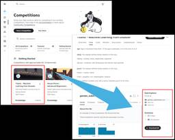
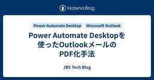
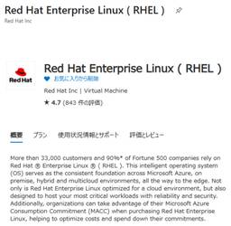
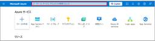
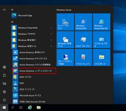

JBS Tech Blog
https://blog.jbs.co.jp/
JBS Tech Blogは、日本ビジネスシステムズ（JBS）の社員が分担して執筆を担当し、技術情報を発信しているブログです！
フィード

【Microsoft×生成AI連載】【Excel】ExcelでのCopilot活用術：Copilotを用いた数式の説明・提案・生成
 1
1
JBS Tech Blog
【Microsoft×生成AI連載】シリーズの記事です。 本記事では「Microsoft Excel」(以下、Excel)で利用できるCopilotの機能について紹介します。 これまでの連載 ExcelのCopilot紹介 数式の説明 グリッド上のボタンから直接質問する方法 自身でチャットを送信して質問する方法 数式の提案・生成 自身でチャットを送信して生成する方法 グリッド上のボタンから直接生成する方法 利用シーンとメリット、注意点 利用シーン メリット 注意点 まとめ おまけ(Copilot Chatによる本記事の要約) これまでの連載 これまでの連載記事一覧はこちらの記事にまとめておりま…
1日前

Fabric Copilot は何ができるの？ ～Power BI編～ 1
JBS Tech Blog
今回は、Fabric Copilotのうち、Power BIでの機能について解説したいと思います。 前提条件 Microsoft Fabric とは？ Fabric Copilot in Power BIとは？ レポートの自動生成と提案 データの要約と説明 要約内容に関するドリルダウン（深掘り）や追加の質問 Fabric Copilot in Power BIを使ってみる まとめ 前提条件 本記事の前提条件は以下の通りです。 Fablic環境は構築済み ワークスペースにFabric容量を割り当てている Fabricに関して基本的な知識を持っている Power BIに関して基本的な知識を持ってい…
2日前

Power Automate Desktopを使ったOutlookメールのPDF化手法 1
JBS Tech Blog
Microsoft Power Automate Desktopを使ってOutlookのメールをPDFとして保存し自動化する方法を紹介します。PCの操作を最小限に抑え、メールの整理を簡単に進めましょう。
3日前

Azure Red Hat Enterprise Linux 仮想マシンのディスク操作手順～データディスク～ 1
JBS Tech Blog
Azure上にデプロイしたRHEL9系（LVM構成）のVMで、データディスクの追加・拡張・アンマウントをする手順を説明します。
3日前
【Microsoft×生成AI連載】Copilot Studio エージェントビルダーで対話形式でエージェントを作成してみた 1
JBS Tech Blog
この記事は、Microsoft Copilot Studio エージェントビルダーを使用して、対話形式で業務特化型のAIエージェントを作成する方法について詳しく解説しています。
6日前

カスタムドメインをAzure Communication Servicesに連携する方法（1） 1
JBS Tech Blog
カスタムドメインをAzure Communication Servicesに連携する方法を紹介します。
7日前

Semantic Kernel Agent Frameworkを使ったマルチエージェントのオーケストレーション、並列での複数エージェントの実行 1
JBS Tech Blog
先日、Semantic Kernel Agent Frameworkが一般提供(GA)開始となりました。Agent FrameworkはSemantic KernelのAIエージェント向けのフレームワークです。アップデートによりマルチエージェントのオーケストレーション機能も強化されたため、本記事ではSemantic Kernel Agent Frameworkでのオーケストレーションに関して記載します。 マルチエージェントのオーケストレーションパターン 複数エージェントの並列処理 実行環境 サンプルコード 回答例 終わりに マルチエージェントのオーケストレーションパターン Semantic K…
7日前
Azure AI Foundryを活用したLLM最適化とファインチューニング実践ガイド 1
JBS Tech Blog
現在、ChatGPTをはじめとする大規模言語モデル（LLM: Large Language Model）は、インターネット上に公開されている膨大な情報を基に学習されています。 しかし、企業が扱う特定分野（ドメイン）に特化した情報や機密情報は、一般には公開されていないことが多く、これらはLLMの学習データには含まれていません。 そのため、AIの企業導入ニーズが高まる一方で、企業特有の業務や専門的なタスクにおいて、汎用のLLMでは十分な精度が得られないという課題が存在します。 本記事では、こうした課題に対する解決策として、ドメイン特化型モデルのアップデート手法のひとつである LoRA（Low-Ra…
7日前

Microsoft Entra Connectのコネクタアカウントの権限不足によるエラー Permission issue 8344 の対処方法 その２
JBS Tech Blog
以前、コネクタアカウントの権限不足によるエラー（Permission issue 8344）の対処法を解説しました。 ※"Permission issue 8344" とは、コネクタアカウンの権限不足によるエラーになります。 blog.jbs.co.jp ただ、上記手順でも Permission issue 8344 の解決に至らなかったケースがありました。 本記事では、より強固な権限を付与して、本エラーに対処する方法を記載いたします。 Permission issue 8344 の解決方法 まとめ Permission issue 8344 の解決方法 以下に Permission issu…
8日前

【Microsoft×生成AI連載】【やってみた】Microsoft Copilot Studioでプロンプトアクションを作成してみた
JBS Tech Blog
【Microsoft×生成AI連載】久保田です。今回はMicrosoft Copilot Studioでプロンプトアクションを作成してみました。 ※この記事の情報は2025/5/9時点のものです。 AIエージェントに興味がある方や、Microsoft Copilot Studioの利用に慣れていない方など、様々な方に読んでいただきたい記事となっておりますので、ぜひご覧ください。 これまでの連載 Microsoft Copilot Studio エージェントの概要 プロンプトアクションの概要 アクションで新しいプロンプトを作成 利用シーンとメリット、注意点 利用シーン メリット 注意点 まとめ …
8日前
Azure OpenAI ServiceのGPT-Image-1を徹底解説
JBS Tech Blog
Azure OpenAI Serviceで限定プレビュー中の画像生成モデル 「GPT-Image-1」 について、概要から使用方法まで詳しく解説します。この記事では以下の観点でGPT-Image-1の特徴を整理し、実践的な使い方を紹介します。
9日前
Nutanix Community EditionでNutanix Files使ってみた Part1
JBS Tech Blog
本記事ではNutanix Communitiy Edition（以下、Nutanix CE）の環境において、Nutanix Filesの設定から動作検証を行うまでの流れを紹介します。 Part1ではNutanix Filesの概要とFSVMのデプロイ準備について記載します。 Nutanix CEでNutanix Filesを構築する流れ STEP1：Nutanix Filesの概要とインストール 本章での検証範囲 Nutanix Filesの概要 Nutanix Filesのインストール 事前準備 Nutanix Filesのダウンロード FSVMのデプロイ前設定 最後に Nutanix CE…
9日前
Power Automate：Power Appsで入力した改行ありのテキストをTeamsへ改行ありで投稿させる方法
JBS Tech Blog
Power AppsとTeamsの連携時に改行が消える問題を解決。この記事では改行を適切に処理し、メッセージを整える方法を紹介します。
10日前
GCP Model Garden にIAMを使用して認証する
JBS Tech Blog
GCP (Google Cloud Platform) を利用して高度なAIモデルを活用する際には、IAM (アイデンティティとアクセス管理) を適切に構成することが不可欠です。この記事では、GCPのModel Garden APIを使用する際に、IAMを通じた効率的な認証手法を具体例を交えて紹介します。
13日前
【Microsoft×生成AI連載】【Outlook】OutlookのCopilot活用術：Copilotで会議の準備をする
JBS Tech Blog
本記事では「Microsoft Outlook」で利用できるCopilotの機能について紹介します。
13日前
Veeamを使ってAmazon S3へバックアップしてみる第1弾 AWS設定編
JBS Tech Blog
本記事では、Veeam Backup&Replicationを使用して、バックアップデータをAmazon S3へバックアップするためのAWS側での設定手順について紹介いたします。 今回は、環境構成の概要およびAWS側の設定方法について紹介いたします。 構成 環境構成図 環境構成情報 前提条件 手順詳細 Amazon S3バケットの作成 Veeam用IAMユーザーの作成 Veeam用IAMユーザーのアクセスキー作成 Veeam用IAMポリシー作成 Veeam用IAMポリシーのアタッチ まとめ 構成 環境構成図 環境構成情報 リージョン：東京リージョン(ap-northeast-1) Veeam …
14日前
Cisco Catalyst Center自身のCPU/メモリデータを取得するAPIのご紹介
JBS Tech Blog
Cisco Catalyst Center（以下CatC）では、Assurance機能により、管理しているNWデバイスのステータスをGUIで確認することが出来ます。過去30日間を遡って、様々な統計情報をグラフなどで可視化して表示出来て、Report機能からデータを出力することも出来ます。 ただし、これらの対象は管理しているNWデバイスであり、CatC自身のデータは含まれておりません。そこで、CatC自身のCPUやメモリの使用率を確認するために利用出来るAPIをご紹介します。 API（System Performance APIとSystem Performance Historical API…
14日前
Excel関数のVLOOKUP関数やXLOOKUP関数をDataflowで実現してみた
JBS Tech Blog
Dataverseにデータを投入する手法の一つとしてデータフローがあります。これを用いると、ローカルにあるファイルやAzure BLOB Storageに配置したファイル、SQLデータベースといったデータベース領域に存在するデータをDataverseに投入することができます。 ただ、単に投入するのではなく、特定の条件に合ったデータを投入したい場合もあると思います。Excelに関数で言えば、「VLOOKUP」関数や「XLOOKUP」関数を使用して特定のデータだけを使用する、といった場合です。 本記事では、架空のシナリオを設けて、「データフローで条件に合ったデータをDataverseに投入する」と…
15日前
【Microsoft×生成AI連載】【Power Platform】Power AppsでCopilot Studioのチャットボットを使ってみた
JBS Tech Blog
本記事ではPower Appsでチャットボットコントロールを追加し、Copilot Studioのチャットボットを使う方法について紹介します。
15日前
Power Appsでアプリの起動と同時にフローを実行する
JBS Tech Blog
Power Appsで、アプリ起動時に連携しているPower Automateフローを実行したいと考えたことはありませんか。 Power Appsで作成されたアプリではSharePointリストやExcelファイル上のテーブル内のデータを扱うことができますが、アプリ起動時にPower Automateフローと組み合わせることで、次のような事も出来るようになります。 アプリ起動のタイミングでアプリに追加しているデータの更新 Power Apppsの「データの追加」から追加することができない、Teamsチャネルでの投稿内容などの取得 本記事では、アプリ起動時にフローを実行するための設定をご紹介しま…
16日前
一時アクセスパスを利用したWindows Autopilotキッティング
JBS Tech Blog
Windows Autopilotキッティングを一時アクセスパスで簡素化。管理者や第三者がユーザーパスワードを知らずにデバイスを安全に設定可能です。
16日前
TerraformでAzureリソース構築後にAzure Potal上から変更を加えた場合の動作
JBS Tech Blog
TerraformでAzureリソース構築後、リソースの状態は状態格納ファイル(terraform.tfstate)に格納されます。要件が変更となり、Azure Portal上からリソース変更した場合の動作について簡単に解説します。 結論から述べると、Azure Portalからリソースを変更した後にTerraformを再度実行すると、Azure Portalから変更した設定は消されてしまいます。 そのため、Azure PortalからTerraformで作成したリソースの設定を変更した後は、Terraformの定義ファイルに追記し terraform apply コマンドを実行し、クラウドリ…
17日前
【vSphere Replication】拡張レプリケーション導入時の注意点
JBS Tech Blog
vSphere Replicationの拡張レプリケーションに関する記事です。従来のレプリケーションとの比較、導入時に問題となるケースについて説明しています。
17日前
BitLockerの回復キー保存コマンドをIntuneから配布する
JBS Tech Blog
IntuneからBitLocker関連の設定を配布する場合、構成プロファイルにてBitLockerに関するテンプレートが準備されていますが、今回は構成プロファイルを使わずにPowerShellコマンドを配布してBitLockerの回復キーを保存する手順をご紹介します。
20日前
【Microsoft×生成AI連載】【やってみた】Microsoft Copilot Studioのテンプレートを使ってエージェント作成してみた
JBS Tech Blog
Copilot Studioを使用してAIエージェントを簡単に作成するためのステップバイステップガイド。初心者にも優しく、テンプレートを活用して効率的にエージェントを構築する方法を紹介します。
20日前
【Microsoft Fabric】セマンティックモデルの役割と構成要素
JBS Tech Blog
Microsoft Fabricは、データの収集や変換、リアルタイム分析、データの可視化などの機能を統合した企業向けのSaaS型プラットフォームです。 今回はデータを可視化する上で重要となるコンポーネントの一つである「セマンティックモデル」の意味や役割、Microsoft Fabricのセマンティックモデルアイテムで基本となる操作方法について紹介します。 セマンティックモデルとは 「セマンティックモデル（Semantic）」とはどのような意味か Power BIのセマンティックモデルとは セマンティックモデルの役割 データの一貫性と再利用性 データの簡素化 セマンティックモデルの主要構成要素 …
21日前
Power Automateでユーザー削除時のエラーを回避する方法
JBS Tech Blog
Power Automateでユーザーを対象とした処理を含むフローを実行する時に、ユーザーが削除されていた状況を考慮したエラーハンドリングの設定方法についてご紹介します！
21日前
クラウドセキュリティ診断のご紹介
JBS Tech Blog
クラウドセキュリティ診断は、クラウド環境に潜む脆弱性を特定し、データ漏洩を未然に防ぐための重要なプロセス。これにより、企業はセキュリティを強化し、信頼性を高めることができます。
22日前
【Microsoft×生成AI連載】【OneNote】タスクリスト作成機能を試してみた
JBS Tech Blog
【Microsoft×生成AI連載】シリーズです！ 今回は、「Microsoft OneNote」（以下、OneNote）でCopilotのタスクリスト作成機能を使用して、ビジネスシーンで活用できるかを検証しました。 これまでの連載 OneNoteのCopilot紹介 利用場所 タスクリスト作成機能を利用 議事メモからタスクリストを作成 メールの内容からタスクリストを作成 利用シーンとメリット、注意点 利用シーン メリット 注意点 まとめ おまけ（Copilot Chatによる本記事の要約） これまでの連載 これまでの連載記事一覧はこちらの記事にまとめておりますので、過去の連載を確認されたい方…
22日前